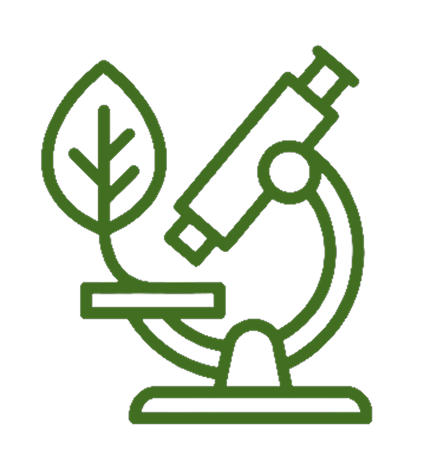
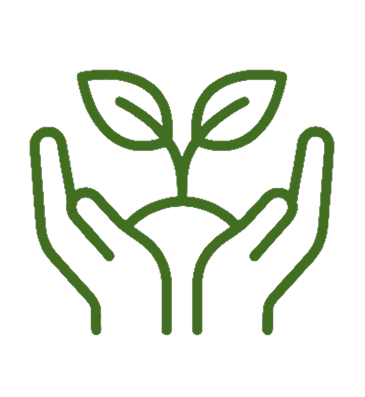

PROJETO
Somos um Programa de Extensão ligado ao Departamento de Engenharia de Pesca, que busca promover a Educação Ambiental e contribuir para a conscientização da sociedade sobre a importância da preservação do meio ambiente. Produzimos e transmitimos conhecimentos de forma objetiva, acessível e responsável, buscando incentivar práticas que contribuam para um desenvolvimento sustentável e consciente. Nosso trabalho possui atenção especial aos ecossistemas de manguezais, destacando sua importância para a biodiversidade, para o equilíbrio ambiental e para as comunidades que dependem desses ambientes. Por meio de ações educativas, atividades de conscientização e iniciativas junto à comunidade, buscamos aproximar o conhecimento científico da sociedade e estimular atitudes voltadas à conservação e ao uso responsável dos recursos naturais. Dessa forma, o Programa Mangue Vivo procura fortalecer a relação entre universidade, sociedade e meio ambientes.

Conheça a equipe por trás do Mangue Vivo!

Coordenadora

Vice-Coordenador

Servidora UFC

Educação Ambiental e Redes Sociais

Educação Ambiental

Redes Sociais e Jornal Digital

Educação Ambiental e Jornal Digital
Redes Sociais e Jornal Digital

Redes Sociais e Jornal Digital

Educação Ambiental

Integrante

Redes Socias e Jornal Digial

O Projeto Mangue Vivo tem como missão promover a conscientização ambiental e incentivar a preservação dos manguezais por meio da educação, da pesquisa e da extensão universitária. Buscamos aproximar a comunidade da importância desses ecossistemas, destacando seu papel na conservação da biodiversidade, na proteção do litoral e na manutenção da qualidade de vida. Nossos objetivos incluem desenvolver ações educativas, realizar atividades de campo, incentivar práticas sustentáveis e apoiar pesquisas que contribuam para a conservação ambiental. Além disso, procuramos fortalecer o vínculo entre a Universidade Federal do Ceará e a sociedade, estimulando a participação da comunidade em iniciativas voltadas à proteção dos recursos naturais e à construção de um futuro mais sustentável.
Conheça algumas das ações realizadas pelo projeto Mangue Vivo!

Trilhas guiadas para conhecer e preservar o ecossistema do manguezal.

Ações coletivas para remover resíduos e preservar o meio ambiente.

Palestras e oficinas para conscientizar sobre a importância dos manguezais.

Estudos voltados ao monitoramento e conservação dos ecossistemas costeiros.

Atividades de recuperação ambiental com espécies nativas do manguezal.
Palestras e oficinas para conscientizar sobre a importância dos manguezais.